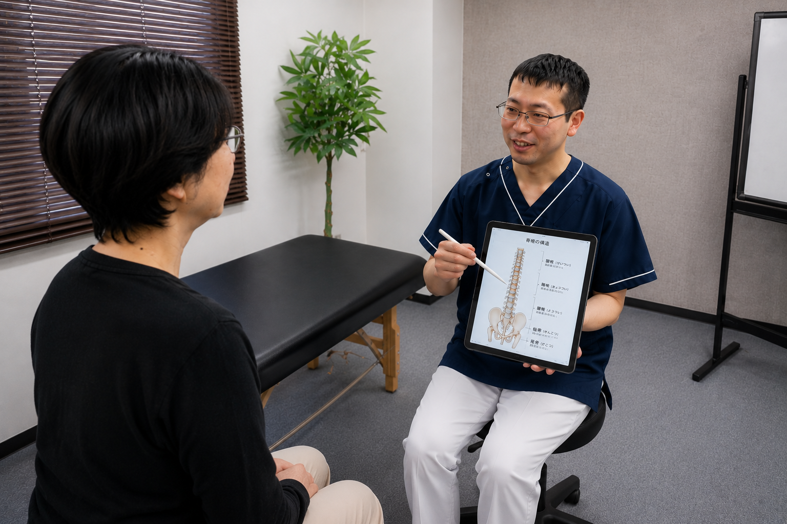
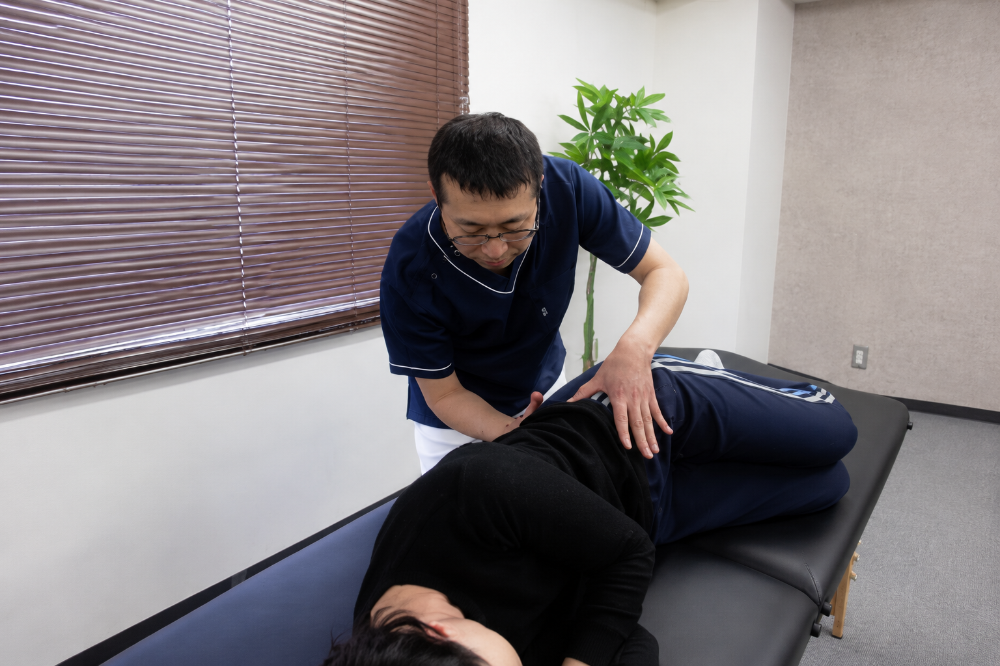
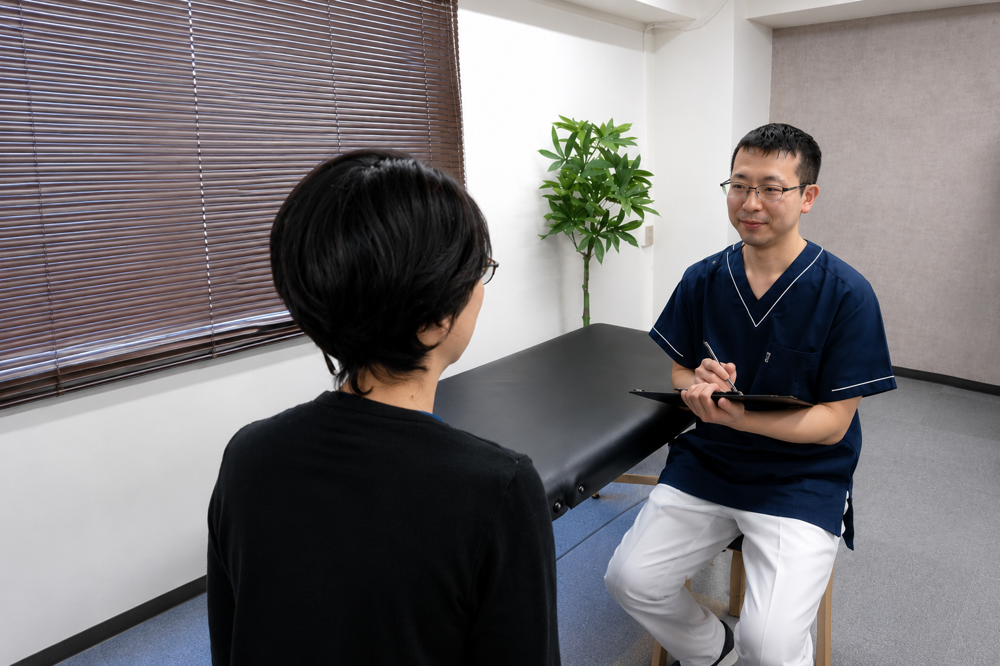

人工関節への手術を勧められているあなたへ
立ち座り、歩く、階段をのぼる。
痛みを気にせず、スッとできる
毎日を目指しませんか？
ヒアルロン酸やリハビリで変わらなかった膝の痛み。
8回の施術で、
痛みを気にせず安心して過ごせる毎日を目指します。
「私のような状態でも相談できますか？」
そんなご質問だけでも大丈夫です。
無理に施術をおすすめすることはありません。
まずは身体の状態を一緒に確認するところから始めます。
こんなお悩みはありませんか？
- ✓人工関節への手術を勧められている
- ✓ヒアルロン酸注射を続けても変わらない
- ✓リハビリを頑張っているのに改善しない
- ✓トイレから立つ時や歩き始めに膝が痛い
- ✓「年齢だから仕方ない」と言われた
- ✓買い物や外出が少しずつ億劫になってきた
- ✓このまま歩けなくなるのではないかと不安を感じている
もし一つでも当てはまるなら、このページはあなたのために作りました。
「もう人工関節しかありませんね」
そう言われても、
本当は手術を受けたくない。
できれば自分の足で歩きたい。
そう思っていませんか？
トイレから立つ時に痛い。
買い物へ行くのが少しずつ億劫になってきた。
階段を見るとため息が出る。
「また痛くなるかも」
そんな不安が頭をよぎり、
外出や友達との約束を断ることも増えてしまう。
でも、
もし膝の痛みが、
軟骨や年齢だけでは説明できないとしたら。
もし身体の見方を少し変えることで、
もう一度、自分の足で安心して暮らせる可能性があるとしたら。
私は病院で8年間、「もう手術しかない」と言われた方々と向き合ってきました。その経験から、膝だけを見るのではなく、身体全体のつながりを確認することの大切さを学びました。
その一つが、関節の小さな動きの乱れ（関節機能障害）という考え方です。
レントゲンでは分からない、関節のわずかな動きの乱れが、膝へ負担を集中させていることがあります。
だから私は、膝だけではなく、背骨・骨盤・股関節・足首まで含めた身体全体を確認し、今の痛みがどこから来ているのかを丁寧に評価します。
人工関節を決める前に
知ってほしい5つのこと
「軟骨がすり減っている＝痛み」とは限りません
レントゲンで軟骨がすり減っていると言われても、同じような状態で痛みなく生活している方もいます。逆に、レントゲンでは異常がないのに強い痛みを感じる方もいます。画像だけでは、今の痛みを説明できないことがあるのです。
ヒアルロン酸やリハビリで変わらない方もいます
ヒアルロン酸やリハビリが悪いわけではありません。ただ、痛みの原因が別のところに残っていると、一時的に楽になっても、また痛みを繰り返してしまうことがあります。
膝だけではなく、身体全体を見ることが大切です
膝は一つだけで動いているわけではありません。背骨、骨盤、股関節、足首。身体全体が連動して動いています。そのどこかに小さな動きの乱れがあると、膝へ負担が集中してしまうことがあります。私は病院で8年間、このようなケースを数多く経験してきました。
手術を決める前に、「原因を確認する」という選択肢があります
「もう人工関節しかない」そう言われても、その前に身体全体の状態を確認することで、今まで気づかなかった原因が見つかることがあります。手術を否定したいわけではありません。納得して選択するためにも、一度原因を確認することは大切だと考えています。
「もう歩けない」と決めるのは、まだ早いかもしれません
「年齢だから仕方ない」「もう歩けなくなるかもしれない」そう思っている方ほど、身体の見方を少し変えることで、安心して生活できる可能性があります。
私が目指しているのは、
痛みだけを見ることではありません。
トイレからスッと立ち上がり、
買い物へ行き、
友達と笑って過ごせる。
そんな「安心して暮らせる毎日」を取り戻すことです。
「もう人工関節しかないと言われたけれど、本当に手術しか方法はないのかな…」
そう感じている方へ。
まずは身体全体の状態を確認し、今の痛みがどこから来ているのか一緒に考えてみませんか？
ご相談だけでも大丈夫です。
LINEで相談するもし、「また痛くなるかも」という不安がなくなったら
あなたは何をしたいですか？
- トイレからスッと立ち上がる。
- スーパーでゆっくり買い物をする。
- 友達との時間を笑顔で楽しむ。
- 階段を手すりばかり気にせずのぼる。
- 朝起きた時に、「今日は痛いかな」と心配しない。
そんな毎日が戻ってくるとしたら、あなたの生活は今よりもっと安心できるものになるかもしれません。
私は膝だけを見るのではなく、身体全体のつながりを確認し、8回の施術を通して、自分の足で安心して暮らせる毎日を目指します。
実際に施術を受けた方の声
「寝ているときも膝がズキズキして、毎晩ほとんど眠れませんでした」
でも施術を受けてからは、朝までぐっすり眠れるように。まわりの看護師さんも思わず笑顔に。
「久しぶりに"痛くない朝"を迎えて、嬉しくて涙が出ました」
歩くたびに強い痛みがあり、サークル歩行器を使って病棟内を移動していました。
「今では杖で歩けるし、手を離しても数歩なら痛みなく歩けるんです」
笑顔で足を踏み出して見せてくれました。
「歩くのが怖くなくなって、少し自信が戻ってきました」
「膝が痛くて、立って洗面をするのも辛かったんです」
「今は立った姿勢でも支えがあれば不安なく過ごせます」
「ちょっとしたことがラクになるだけで、気持ちもずいぶん違いますね」
安静にしていてもズキズキ痛み、強めの痛み止めを飲んでもなかなか効かず、毎日がつらかったDさん。
「最近は薬に頼らなくても過ごせる日が増えて、気持ちも前向きになれました」
他院で「偽痛風」と診断され、膝に触れられるだけでも激痛だったEさん。
「まさか歩いても痛くなくなる日が来るなんて…」
以前は不安そうだった口調も、今では落ち着きと自信がにじんでいます。
施術者紹介

井本大揮
作業療法士 FJTアドバンス修了病院で8年間、さまざまな痛みに悩む方と向き合ってきました。その中で多く見てきたのが、
- 手術後も痛みが残っている方
- リハビリを続けても改善しない方
でした。
「手術をすれば良くなると思っていたのに…」
そう話される方を見て、"本当にそれだけが選択肢なのか" と疑問を持つようになりました。
そして気づいたのが、レントゲンでは分からない原因があるということです。実際に、関節の動きを整えることで、痛みが変化していくケースを多く経験してきました。
現在はその経験をもとに、「どこに行っても良くならなかった痛み」に対して、原因から見直す施術を行っています。
まずは状態を確認するだけでも構いません。また、身体はとても繊細なため、必要以上に手を加えることで、バランスが崩れてしまうこともあります。当院では、原因に対して必要な範囲だけを整えていきます。
これまで多くの方が、「もう無理かもしれない」と思っていた状態から、日常生活を取り戻されています。
推薦の声

井本さんは、関節に特化した治療技術のスペシャリストです。私たちの提供する最高のコースを受講されました。他の技術では全く効果を実感されていない方には、最後の砦になる可能性があります。
井本さんほど、患者さんに真摯に対応し、結果を出してくれる治療者は他にいません。あなたがどこに行っても思うような結果が得られていないのでしたら、井本さんはきっとあなたの望む結果を出してくれます。
初回カウンセリング・施術体験
まずは、あなたの身体の状態を一緒に確認してみませんか？
施術の流れ
問診・ヒアリング
まずは、いつから痛みが出たのか、どんな時に困っているのか、普段の生活で不安に感じていることなどを丁寧にお伺いします。症状だけではなく、あなたが「どんな生活を取り戻したいのか」も含めてお話をお聞きします。

検査
問診をもとに、膝だけではなく、背骨・骨盤・股関節・足首など身体全体の動きを確認します。施術前後で身体の変化を一緒に確認しながら進めますので、ご自身でも変化を実感していただけます。

施術
当院では、いきなり痛い部位を強く施術することはありません。まずは、痛みに関係している可能性が高い背骨の関節を中心に、身体全体のバランスを整えていきます。ボキボキするような施術や、痛みを伴う施術は一切行いません。身体に負担の少ない方法で進めますので、ご安心ください。

状態説明
現在の身体の状態や、なぜ痛みが出ていると考えられるのかを分かりやすくご説明します。そのうえで、今後の施術方針や来院の目安についてご提案いたします。ご自身の身体の状態を理解し、納得したうえで今後の選択をしていただけるよう、丁寧にお話しします。

「もう人工関節しかない」と決める前に、
まずは一度、
身体全体の状態を確認してみませんか？
ご相談・ご予約はこちら
無理に施術をおすすめすることはありません。
もう一度、
- トイレからスッと立ち上がる。
- 買い物へ気軽に出かける。
- 友達との時間を笑顔で楽しむ。
そんな「痛みを気にせず安心して過ごせる毎日」を目指したい。
そう思われた方は、お気軽にご相談ください。
LINEで相談・予約する 「私のような状態でも相談できますか？」そんなご質問だけでも大丈夫です。
どちらが自分に合っているか分からない方も、
まずはLINEでお気軽にご相談ください。 お電話でのご予約・お問い合わせはこちら
ここまで読んでくださった方へ
ここまで読んでくださったということは、今の膝の痛みに不安を感じ、「まだ何か方法があるかもしれない」そう思ってくださっているのかもしれません。
私は無理に施術をおすすめすることはありません。まずはあなたのお話を伺い、身体の状態を一緒に確認するところから始めます。
「私のような状態でも相談できますか？」
そんなご質問だけでも大丈夫です。
「もう年齢だから仕方ない」「もう人工関節しかない」そう思っている方ほど、一度だけ身体全体を確認してみてください。
あなたがもう一度、安心して暮らせる毎日を取り戻すお手伝いができれば嬉しく思います。
「ヒアルロン酸を続けても変わりません」
そんなメッセージだけでも大丈夫です。 お電話でのご予約・お問い合わせはこちら